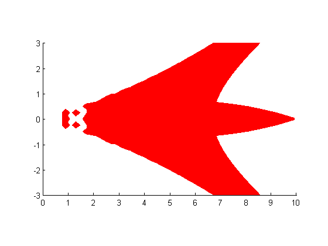
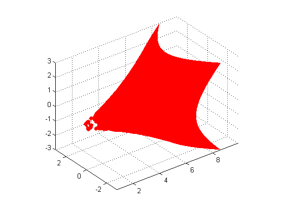
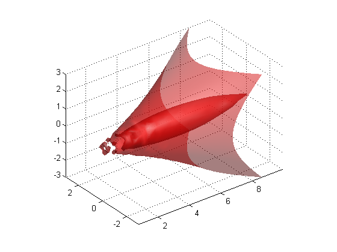
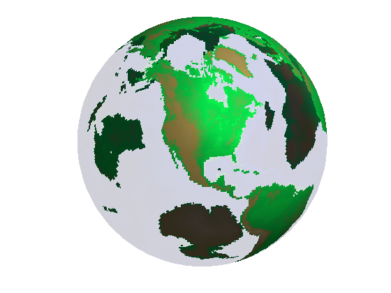

透明性の変更
グラフィック オブジェクトの透明性の値を修正すると、不透明なオブジェクトで隠されている構造が明らかになります。Patch や Surface に対して、FaceAlpha と EdgeAlpha プロパティを使って、面やエッジの透明性を設定します。以下に例を示します。
目次
透明な等値面
関数 flow は無限のタンク内の水中ジェットの速度プロファイルに対するデータを生成します。このデータを可視化する 1 つの方法は、流速が指定された値とどこで等しくなるかを示す等値面を作成することです。
cla [x y z v] = flow; % Compute and create a patch object from data created from the isosurface with a % isosurface scalar value of -3 p = patch(isosurface(x,y,z,v,-3)); % Get the normals to the isosurface based on the gradients of v - scalar values % at the x,y,z coordinate isonormals(x,y,z,v,p); set(p,'facecolor','red','edgecolor','none'); daspect([1 1 1]);
表示を 3 次元に変更します。
view(3); axis tight; grid on;
表面を更に定義するには、光源をシーンに追加します。
camlight;
既定の flat から gouraud にライティングを変更することで、表面のシェーディングではなくスムージング シェーディングを適用します。
lighting gouraud;
等値面に透明性を加えることで、不透明な表面を使用して表示される場合よりも流体の流れが複雑であることが明らかになります。ステートメント alpha(0.5) は、等値面の FaceAlpha 値を 0.5 に設定します。
alpha(0.5)
テクスチャー マップ
MAT ファイル topo.mat は、地球のさまざまな大陸を表すカラー データを持っています。この例では、球体の表面上にこのデータを写像する方法を示します。
関数 sphere は、球体の座標を生成します。surface オブジェクトの cdata プロパティを topo に設定すると、各大陸の topo に含まれるカラー データが球体の表面上に写像されます。さらに、z データのサイズが cdata のサイズと異なる場合、facecolor プロパティは texturemap に設定されている必要があります。その場合、MATLAB® は、色が内挿を使用して指定されない z データ ポイントで色を塗りつぶします。facealpha の透明性プロパティが texture タイプに指定されている場合にも、MATLAB® はカラー データを表面上に写像できます。このプロパティが指定されない場合、地球儀は透明になりません。facealpha の他のオプションを利用できます。詳細は、ドキュメンテーション内で facealpha texture を検索してください。
cla reset; load topo; [x y z] = sphere(45); s = surface(x,y,z,'facecolor','texturemap','cdata',topo); set(s,'edgecolor','none','facealpha','texture','alphadata',topo); set(s,'backfacelighting','unlit'); colormap(topomap1); alpha('direct'); alphamap([.1;1]) axis off vis3d; campos([2 13 10]); camlight; lighting gouraud;